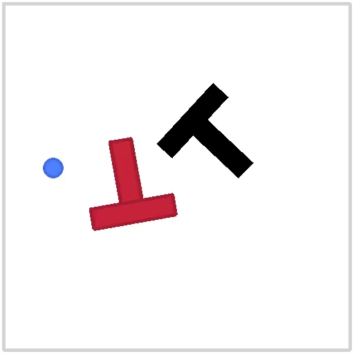
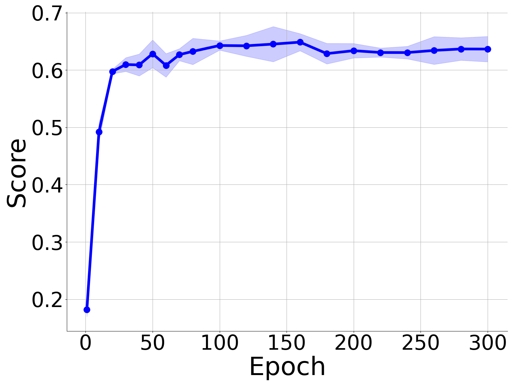

(Ours) Real-world evaluation video of test 8 for NC-pretrained policy trained under 100 demos.
Control-Oriented Clustering of
Visual Latent Representation

Abstract
We initiate a study of the geometry of the visual representation space --the information channel from the vision encoder to the action decoder-- in an image-based control pipeline learned from behavior cloning. Inspired by the phenomenon of neural collapse (NC) in image classification (Papyan et al., 2020), we investigate whether a similar law of clustering emerges in the visual representation space. Since image-based control is a regression task without explicitly defined classes, the central piece of the puzzle lies in determining according to what implicit classes the visual features cluster, if such a law exists.
Focusing on image-based planar pushing, we posit the most important role of the visual
representation in a control task is to convey a goal to the action decoder; for instance,
rotate the object clockwise and push it northeast
. We then classify training samples of expert
demonstrations into eight control-oriented
classes --based on (a) the relative pose
between the object and the target in the input or (b) the relative pose of the object induced by expert
actions in the output-- where one class corresponds to one relative pose orthant
(Repos). Across four different instantiations of the vision-based control
architecture, we report the prevalent emergence of control-oriented clustering (similar to NC) in the
visual representation space according to the eight Repos.
Beyond empirical observation, we show such a law of clustering can be leveraged as an algorithmic tool to improve test-time performance when training a policy with a limited amount of expert demonstrations. Particularly, we pretrain the vision encoder using NC as a regularization to encourage control-oriented clustering of the visual features. Surprisingly, such an NC-pretrained vision encoder, when finetuned end-to-end with the action decoder, boosts the test-time performance by 10% to 35% in the low-data regime. Real-world vision-based planar pushing experiments confirmed the surprising advantage of control-oriented visual representation pretraining.
NC Phenomenon
Evaluation on Simulation
Write some description here.

Evaluation Video

Evaluation Score
NC Performance Metrics
Write some text here.

Class-Distance Normalized Variance

Standard Deviation of Angle Spanned by Cluster Mean Vectors

Standard Deviation of Length of Cluster Mean Vectors
Real-World Validation

(Ours) Real-world evaluation trajectory of test 8 for NC-pretrained policy trained under 100 demos.

Real-world evaluation trajectory of test 8 for baseline policy trained under 100 demos.
Real-world evaluation video of test 8 for baseline policy trained under 100 demos.
Check All Real-world Evalutaion Results:
(Ours) NC-pretrained policy trained under 100 demos (8 out of 10)
Test 0: Success.
Test 1: Success.
Test 2: Failure.
Test 3: Success.
Test 4: Success.
Test 5: Success.
Test 6: Failure.
Test 7: Success.
Test 8: Success.
Test 9: Success.
Baseline policy trained under 100 demos (5 out of 10)
Test 0: Success.
Test 1: Success.
Test 2: Failure.
Test 3: Success.
Test 4: Success.
Test 5: Failure.
Test 6: Failure.
Test 7: Success.
Test 8: Failure.
Test 9: Failure.
(Ours) NC-pretrained policy trained under 50 demos (4 out of 10)
Test 0: Success.
Test 1: Success.
Test 2: Failure.
Test 3: Failure.
Test 4: Failure.
Test 5: Failure.
Test 6: Failure.
Test 7: Success.
Test 8: Failure.
Test 9: Success.
Baseline policy trained under 50 demos (2 out of 10)
Test 0: Success.
Test 1: Failure.
Test 2: Failure.
Test 3: Failure.
Test 4: Failure.
Test 5: Failure.
Test 6: Failure.
Test 7: Failure.
Test 8: Failure.
Test 9: Success.
BibTeX